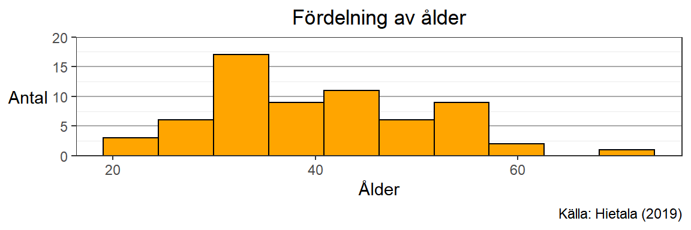

2 Visualisering
2.1 Varför är visualisering viktigt?
“En bild säger mer än tusen ord” är ett vanligt förekommande ordspråk som innehåller mycket sanning. Speciellt när det kommer till information används visualiseringar i olika former för att på ett effektivt och tydligt sätt förmedla stora mängder data som hade varit svårare att uppfatta som enskilda siffror.
Visualisering ger en statistiker möjlighet att lära känna sitt datamaterial innan mer djupgående analys påbörjas. Med mycket data är det oftast svårt få grepp om sina variabler och observationer. Frågor som; “vad är sambandet mellan mina variabler?” eller “finns det några felaktigheter i materialet?” blir mycket enklare att besvara med hjälp av visualiseringar.
Om du ska presentera något banbrytande för dina kollegor eller chefer måste du på något sätt kunna sammanfatta resultatet på ett lättförståeligt och tydligt sätt. Visualiseringar är ett verktyg som ger många möjligheter att komprimera informationen som ska förmedlas.
2.2 Grundläggande begrepp
Ett diagram innehåller olika delar som kommer refereras i resterande text. Här följer en kortare ordlista:
- Diagramyta: Det område som innehåller all information tillhörande en visualisering
- Rityta: Det område som innehåller det faktiska data som visualiseras
- Axel: Kanterna som begränsar ritytan, ofta benämnt som x- och y-axel för den vågräta ( - ) respektive lodräta ( | ) axeln
- Axelförklaring: En rubrik som beskriver vad den angivna axeln visar för information
- Skalvärden: Steg som anger specifika värden på den angivna axeln
- Stödlinjer: Linjer vilka agerar som en förlängning av axlarnas skalvärden i bakgrunden av ritytan
- Titel/rubrik: En rubrik för diagrammet
- Källhänvisning: En text placerade i någon av de nedre hörnen som anger en källa för det visualiserade datamaterialet om sådan finns
2.3 Ett bra diagram
För att skapa ett bra diagram behöver man tänka på några olika saker.
Vilken typ av variabel som ska visualiseras påverkar huruvida ett diagram är tydligt eller inte. Samma sorts diagram kan mycket enkelt och tydligt visualisera en kvalitativ variabel men visualiserar kvantitativa variabler värdelöst…
Figur 2.1: Exempel på stapeldiagram för en kvalitativ (t.vä.) och kvantitativ (t.hö.) variabel
Ritytan innehåller den information som ska förmedlas och bör därför få ta upp majoriteten av platsen i ett diagram. Om man anger för stora rubriker blir det lätt att man inkräktar på ritytan. Detsamma gäller om y-axeln innehåller långa skalvärdesnamn.
Figur 2.2: Exempel på diagram med majoriteten rityta (t.vä.) och för liten rityta (t.hö.)
Stödlinjer bör finnas för att underlätta utläsningen av information långt från respektive axel. Dessa bör dock inte ta över diagrammet utan enbart finnas i bakgrunden. Notera att stödlinjer kan komma att justera beroende på vilket sammanhang diagrammen används till. Beroende på upplösning, ljusstyrka eller andra skärmegenskaper kan ibland ljusa och smala linjer försvinna in i den vita bakgrunden. Då är tjockare och starkare stödlinjer befogat.
Figur 2.3: Exempel på stödlinjer som ligger i bakgrunden (t.vä.) och stödlinjer som stjäl fokus från informationen (t.hö.)
Ett bra diagram har också läsbar text oavsett storleken på diagrammet. En bra referens kan vara att förhålla den minsta texten i diagrammet till ungefär samma storlek som brödtexten i rapporten eller presentationen. Försök att alltid tänka på att underlätta för läsaren!
Figur 2.4: Exempel på läsbar text (t.vä.) och på gränsen till för liten text (t.hö.)
Källhänvisning bör finnas i alla diagram där informationen är hämtat från någon annan källa än oss själva.
Figur 2.5: Exempeldiagram med källhänvisning
2.4 Visualisering av beskrivande statistik
2.4.1 Stapeldiagram
Den absolut enklaste formen av visualisering är stapeldiagram. Denna diagramtyp består utav staplar vars höjd kommer från ett värde i datamaterialet, vanligtvis då man har en kvalitativ variabel och dess frekvenser (antalet av de olika arterna i diagrammen från tidigare kapitel), men diagramtypen kan också användas då man har en kvantitativ variabel uppdelad på en eller flera kvalitativa variabler (medellönen uppdelat på olika sektorer). Följande exempel kommer utgå från det första fallet.
Olika programvaror kräver olika mycket bearbetning av datamaterialet innan diagrammet kan skapas. Vissa kräver att du själv skapar en frekvenstabell och anger att höjden av respektive stapel ska bestämmas av den tillhörande frekvensen, medan andra kan göra dessa beräkningar direkt på rådata.
Som tidigare nämnt om R använder sig programmet av diverse paket som innehåller redan skapade funktioner för att lösa diverse arbetsuppgifter. För visualisering kommer vi använda oss främst av paketet ggplot2 som bygger på vad som kallas för grammar of graphics. (@ggplot2019) Detta är ett försök till att formalisera ett språk för hur man enhetligt bör “skriva” visualiseringar och även SPSS använder sig av grunderna till detta språk. Det första steget för att få ta del av funktionerna är att ladda paketet till din R-session genom:
Paketets visualiseringar utgår ifrån en data.frame vilket innebär att vi behöver ladda in ett datamaterial innan vi kan påbörja visualiseringarna. Detta kan göras med någon utav funktionerna read.csv(), read.csv2() osv. Se till att datamaterialet som laddats in ser ut som vi förväntar att det ska göra, exempelvis är decimaler korrekt angivna, har vi lika många variabler i R som i Excel och liknande. Med koden nedan kan datamaterialet som används som exempel genom hela denna text laddas in i R till objektet som kallas exempeldata. Vi kan även se hur materialet ser ut genom att använda head() som skriver ut ett antal observationer. Materialet ser ut att innehålla fem variabler, varav två är kvalitativa.
## civilstand alder bil syskon lon
## 1 Par 26 Opel 0 26793
## 2 Par 44 Ford 2 49588
## 3 Par 34 Volvo 3 40461
## 4 Par 33 Ingen 4 40299
## 5 Par 32 Audi 3 369422.4.1.1 Grundkomponenter
Vi kan nu börja med att skapa stapeldiagrammet. Vi börjar med de tre grundkomponenterna av ett ggplot-diagram; ggplot(), aes() och geom(). Alla diagram måste innehålla dessa tre komponenter i någon form för att vi ska kunna producera något överhuvudtaget, sen kan vi lägga till andra instruktioner för att ändra diagrammet utseende.
I ggplot() anges vilket datamaterial vi vill använda för visualiseringen:

Som vi ser skapas inget utifrån detta kommando, vi har bara sagt åt R att använda datamaterialet men inte vad den ska göra med det. Nästa steg är att ange vilka variabler vi vill använda för axlarna i diagrammet. När det kommer till stapeldiagram finns två olika sätt att göra; antingen har vi rådata och låter R räkna ut frekvensen av de olika kategorierna själv eller så skapar vi en egen frekvenstabell och anger y = frekvens. Vi kommer först börja med exemplet utifrån rådata:
Nu ser vi att R ritat ut de olika bilarna som finns i materialet på x-axeln, men vi har fortfarande inte sagt åt R vad vi vill att den ska göra med informationen vi ska visualisera. Den sista grundkomponenten är den som styr vilken diagramtyp vi skapar och i ggplot2 finns många olika som vi kommer stöta på i denna text. För ett stapeldiagram anger vi geom_bar() från engelska termen bar chart.
För att y-axeln ska visa relativa frekvenser istället för absoluta, kan vi i geom_bar() lägga till koden aes(y = stat(count/sum(count))). Diagrammet ändrar sig inte i sin form, staplarna är fortfarande lika höga i relation till varandra, men tolkningar av detta diagram kan nu göras i andelar (procent) istället för antal.
Med dessa grundkomponenter får vi fram ett diagram, men vi kan väl alla hålla med om att det i detta läge inte ser särskilt snyggt och tydligt ut. Ett snabbt och enkelt sätt att få till lite snyggare diagram är att använda någon utav ggplots teman som finns tillgängliga genom olika theme(). Exempelvis är ett stilrent tema att utgå ifrån theme_bw() likt:
Det är nu den största funktionaliteten med ggplot2 kommer in. Vi kan spara instruktionerna vi gett åt R för att skapa diagrammet och senare lägga till fler instruktioner med andra funktioner genom att använda + på samma sätt som koderna ovan är skrivna. Vi sparar därför de nuvarande instruktionerna i ett objekt som vi kallar för p (vi kan döpa denna till vad som helst) likt:
Nu ligger alla instruktioner för hur R ska rita upp diagrammet sparat i p men för att R också ska producera diagrammet måste vi också säga det likt:

Vi kan nu lägga till ytterligare funktioner exempelvis:
eller:

Notera att diagrammet inte roterades i det andra diagrammet när vi ändrade hur skalvärdena på y-axeln ser ut. Detta är för att vi endast sagt åt R att rita diagrammet med vardera tillagda instruktion vid två olika tillfällen utan att ha sparat de någonstans. För att R ska spara dessa instruktioner tillsammans med grundkomponenterna vi angivit innan måste vi spara ovanstående kod till ett objekt:
2.4.1.1.1 Sammanställd data
Om vi istället för rådata har sammanställd data exempelvis i form utav en frekvenstabell kan vi ändå skapa samma ovanstående diagram. Vi tänker oss att data om bilarna istället för de 64 observationerna är presenterad i följande tabell:
| Märke | Frekvens |
|---|---|
| Audi | 11 |
| Ford | 9 |
| Ingen | 5 |
| Nissan | 10 |
| Opel | 4 |
| Toyota | 5 |
| Volkswagen | 6 |
| Volvo | 14 |
Det som är viktigt är att vi fortfarande i R hanterar denna frekvenstabell som en data.frame, då ggplot kräver formatet för sina visualiseringar. Datamaterialet ser då istället ut som:
## Märke Frekvens
## 1 Audi 11
## 2 Ford 9
## 3 Ingen 5
## 4 Nissan 10
## 5 Opel 4
## 6 Toyota 5För att skapa diagrammet som vi sett tidigare måste vi lägga till några argument i aes() och geom_bar() likt koden nedan. Argumentet stat = "identity" i geom_bar() krävs för att R ska räkna värdet på den angivna y-variabeln som höjden på stapeln.
2.4.1.2 Färger
Om vi vill ändra färgen på olika delar av diagrammet exempelvis staplarna kan vi göra detta inuti geom_bar() med argumenten color för kantlinjerna och fill för fyllnadsfärgen. För att se vilka färger som går att ange kan man köra funktionen colors() för deras namn eller hämta hem följande PDF som har färgerna utskrivna. Vi kommer senare titta närmare på färger och dess funktion i visualiseringar.
2.4.1.3 Stödlinjer
Nu vill vi ändra lite stödlinjer så att de syns och hjälper till att förtydliga informationen vi vill visa. När det kommer till stapeldiagram behövs inte stödlinjer på x-axeln då staplarna sträcker sig hela vägen ner till dess skalvärden. Däremot behöver vi förtydliga skalvärdena på y-axeln. För att ändra utseendet på olika delar i ett diagram används theme() och diverse olika argument däri. Titta i dokumentationen för funktionen för att få en inblick i vad som kan ändras i diagrammet. Oftast ska dessa delar anges med en utav element-funktioner, beroende på typen som ska ändras. Text ändras med element_text(), linjer med element_line() och delar kan helt och hållet tas bort genom element_blank(). Nedanstående kod ändrar stödlinjerna på y-axelns färg till lite mörkare grå än standardvärdet (panel.grid.major för stödlinjerna som följer skalvärdena, panel.grid.minor för stödlinjer emellan skalvärdena) och tar bort stödlinjerna från x-axeln.
2.4.1.4 Text
Det som saknas just nu i diagrammet är tydligare (och större) text som förklarar de olika delarna av diagrammet för läsaren. De olika etiketterna kan alla anges i samma funktion genom olika argument likt:

Det vi kan förhålla oss till när vi anger titeln för y-axeln är att den beskriver enheten som används för att mäta axelns skalvärden. Då vi i detta fall har värden mellan \(0\) och \(1\) bör vi ange Andel som titel. Om vi skulle haft absoulta frekvenser skulle en lämplig titel varit Antal. Om vi istället för andelar anger skalan i procent likt tidigare diagram kan det diskuteras huruvida det behövs en y-axeltitel eftersom enheten redan är angiven på skalan. Diagrammet skulle då kunna se ut som:
Vi kan även ändra andra aspekter av textens utseende i diagrammet, exempelvis hur stor den är, dess rotation eller position. Detta görs med olika argument i theme(). Vi kan ändra utseendet på axeltexter med axis.title, skalvärden med axis.text och källhänvisningen med plot.caption. Alla dessa delar kräver instruktioner från element_text()-funktionen och där kan argument som:
anglestyra rotationen,hjustochvjuststyra placeringen horisontellt respektive vertikalt,sizestyra textstorleken,fontstyra typsnittet,faceange en eventuell fet- eller kursivmarkering av texten
2.4.1.5 Skalvärden
Ibland kan de automatiskt genererade axelskalorna medföra svårigheter att utläsa informationen som vi ska presentera. Därför är det sista vi kommer titta på funktioner för att ändra dessa skalor. Vilken funktion vi vill använda och hur man kan ändra utseendet påverkas av vilken sorts variabel som anges på den specifika axeln. Exempelvis kanske vi vill i diagrammet ändra så att den kontinuerliga y-axeln endast visar skalvärden var 10:e procent istället för var 5:e som nu sker. Detta gör vi då via:
Argumentet breaks = seq(from = 0, to = 1, by = .10) anger att vi vill att värden (breaks) ska visas på specifika ställen på axeln. seq()-funktionen är ett snabbare sätt att skapa en vektor med lika steglängd mellan värden som vi använder för att skapa c(0, 0.1, 0.2, 0.3, ..., 1). Notera att trots att vi anger värden som går hela vägen upp till 1, kommer inte diagrammet visa detta.
Om vi skulle vilja visa en större del av axeln kan vi ange skalans gränser med limits likt koden nedan. Risken med detta är att vi skapar för mycket onödig tom rityta som minskar utrymmet för den information som vi vill presentera.
Något som dock är snyggt att göra med specifikt stapeldiagram är att ta bort den lilla yta som finns under alla staplar och låta y-axeln möta x-axeln vid y = 0. Detta kan vi göra med argumentet expand = c(0,0), men då måste vi ange gränserna på skalan.
p <- p + scale_y_continuous(breaks = seq(from = 0, to = 1, by = .10),
limits = c(0, 0.25),
expand = c(0,0))
p
2.4.2 Grupperat stapeldiagram
Om vi har ett datamaterial bestående av flera kvalitativa variabler kan vi ibland vilja visualisera fördelningen av en variabel grupperat på en annan, exempelvis “Hur ser fördelningen av bilmärken ut, uppdelat på civilstånd?”. Det kanske finns några intressanta relationer mellan dessa två variabler som vi skulle vilja undersöka vidare, men som tidigare sagt är visualisering alltid det första steget för att lära känna sitt datamaterial.
I vårt exempeldata har vi två kvalitativa variabler, civilstand och bil. För att visualisera ett grupperat stapeldiagram behöver vi välja en grupperings- och en fördelningsvariabel. Fördelninsgsvariabeln kommer grupperas över varje enskilda kategori från grupperingsvariabeln.
I R måste vi ange grupperingsvariabeln likt det vi gjort tidigare som x och fördelningsvariabeln som fill inuti aes(). Detta kommer säga åt R att vardera värde på bil ska ha olika fyllnadsfärger. position = "dodge" bestämmer att staplarna ska ligga bredvid varandra och position = "stack" staplar de ovanpå varandra för ett s.k. stackat stapeldiagram.
p <- ggplot(exempeldata) +
aes(x = civilstand, fill = bil) +
geom_bar(position = "dodge") +
theme_bw()
p För relativa frekvenser i ett grupperat stapeldiagram kan vi summera de visualiserade staplarna på två olika sätt.
- Antingen visar vi relativa frekvenser utifrån hela datamaterialet. Detta diagram kommer se exakt likadan ut som den med absoluta frekvenser men med andelar istället för antal. Vi använder samma kod som för det enkla stapeldiagrammet:
aes(y = stat(count/sum(count))).
ggplot(exempeldata) + aes(x = civilstand, fill = bil) +
geom_bar(aes(y = stat(count/sum(count))),
position = "dodge") +
theme_bw()- Alternativet är att visa den relativa fördelningen grupperat på grupperingsvariabeln, alltså att vardera kategoris staplar summerar var för sig till 100 procent. Vi behöver då revidera koden som anger beräkningen till relativa frekvenser till:
aes(y = stat(count/tapply(count, x, sum)[x])).
ggplot(exempeldata) + aes(x = civilstand, fill = bil) +
geom_bar(aes(y = stat(count/tapply(count, x, sum)[x])),
position = "dodge") +
theme_bw()Figur 2.6: Grupperat stapeldiagram med enkel summering (t.vä.) och gruppvis summering (t.hö.) till 100 procent
Tolkningarna på vardera av dessa diagram skiljer sig åt och valet styrs av vilken sorts frågeställning som vi vill besvara med visualiseringen. En jämförelse av gruppernas fördelning skulle bli tydlig med en gruppvis summering, medan presentation av fördelningen i materialet kan visualiseras med den enkla summeringen.
2.4.2.1 Förtydliga diagrammet
Oavsett vilket sätt att summera staplarna som används ser de inte alls tydliga ut. Vi förtydligar till diagrammet med liknande hjälpfunktioner som tidigare stapeldiagram. Vi lägger till tydligare kantlinjer på staplarna, lägger till stödlinjer och etiketter, samt justerar utseendet på diverse texter samt ändrar skalan för y-axeln.
p <- ggplot(exempeldata) +
aes(x = civilstand,
fill = bil) +
geom_bar(aes(y = stat(count/sum(count))),
position = "dodge",
color = "black") +
theme_bw() +
theme(panel.grid.major.x = element_blank(),
panel.grid.minor.x = element_blank(),
panel.grid.major.y = element_line(color = "gray70"),
panel.grid.minor.y = element_line(color = "gray80"),
plot.caption = element_text(face = "italic"),
axis.title.y = element_text(angle = 0, vjust = 0.5, size = 11),
axis.title.x = element_text(size = 11),
axis.text = element_text(size = 10, color = "black")) +
labs(x = "Civilstånd",
y = "Andel",
caption = "Källa: Hietala (2019)") +
scale_y_continuous(expand = c(0,0),
breaks = seq(0, 0.20, by = 0.05),
limits = c(0, 0.16))
p2.4.2.2 Färger
Det som också urskiljer ett grupperat stapeldiagram med det skapades tidigare är att vi nu har en legend till höger av diagramytan som innehåller ytterligare information som krävs för att läsa av diagrammet. Vi har fått olika färger på den valda fördelningsvariabeln som kopplas samman till de olika kategorierna. Dessa vill vi nu ändra tillsammans med att ändra lite information i legenden för att göra den tydligare.
För att skapa ett diagram som har en enhetlig och tydlig färgpalett kommer paketet RColorBrewer till användning. Ladda paketet med require(RColorBrewer) och titta på de olika färgkategorierna som finns att använda genom display.brewer.all(). Det rekommenderas att välja någon av de monokromatiska färgskalorna likt "Oranges" eller "Purples".
För att revidera utseendet på legenden och de använda färgerna används funktionen scale_X_manual() där X ersätts med den sorts gruppering som har gjorts för att skapa legenden, i detta fall fill. I values anges vilka färger som ska användas i diagrammet och där vill vi då använda någon palett från RColorBrewer genom brewer.pal()-funktionen. Argumentet n anger hur många färger vi vill ha och name anger vilker palett vi vill ta färgerna från.
2.4.3 Histogram
Om variabeln istället är kvantitativ och vi vill presentera fördelningen av denna variabel, är histogram (eller lådagram) lämpligt att använda.
Likt tidigare diagram i R behöver vi först ange vilket datamaterial samt vilken variabel som vi ska visualisera.
När väl det är gjort måste vi på samma sätt som tidigare ange vilken form av visualisering som ska göras. För histogram använder vi geom_histogram(), med argumentet bin som styr hur många klassintervall vi vill ha. Om vi istället vill ange hur breda intervallen ska vara kan vi använda argumentet binwidth.
Vi kan också snygga till diagrammet med alla funktioner som vi tidigare använt för stapeldiagram.
p <- p + scale_y_continuous(expand = c(0,0), limits = c(0, 20)) +
theme_bw() + theme(axis.title.y =
element_text(angle = 0,
hjust = 1,
vjust = 0.5),
plot.title =
element_text(hjust = 0.5),
panel.grid.major.x =
element_blank(),
panel.grid.minor.x =
element_blank(),
panel.grid.major.y =
element_line(color = "dark gray")) +
labs(y = "Antal",
x = "Ålder",
title = "Fördelning av ålder",
caption = "Källa: Hietala (2019)")
p
2.4.4 Lådagram
Ett alternativ att presentera fördelningen för en kvantitativ variabel är lådagram. Denna visualiseringstyp lämpar sig bättre om det finns extremvärden i materialet då diagrammet utgår ifrån kvartiler.
Vi börjar strukturera ett lådagram på samma sätt som vi gjorde med histogrammet, dock behöver vi använda ett knep för att R ska skapa ett snyggt diagram. I aes() måste x = factor(0) som är ett sätt för R att skapa en tom kategorisk variabel. Lådagrammet skapas med geom_boxplot().
För att ta bort onödiga skalvärden och axelförklaring för den tomma variabeln som vi skapat används värdet NULL på de argument som vi vill ta bort, exempelvis breaks i scale_x_discrete().
p <- ggplot(exempeldata) + aes(x = factor(0), y = alder) +
geom_boxplot(fill = "orange") +
scale_x_discrete(breaks = NULL)
pSnyggar till diagrammet som tidigare.
p <- p + theme_bw() + theme(axis.title.y =
element_text(angle = 0,
hjust = 1,
vjust = 0.5),
plot.title =
element_text(hjust = 0.5),
panel.grid.major.x =
element_blank(),
panel.grid.minor.x =
element_blank(),
panel.grid.major.y =
element_line(color = "dark gray")) +
labs(y = "Ålder",
x = NULL,
title = "Fördelning av ålder",
caption = "Källa: Hietala (2019)")
p2.5 Samband mellan variabler
2.5.1 Spridningsdiagram
När ett datamaterial innehåller flera variabler kan det vara intressant att undersöka vilka (om några) variabler har ett samband med varandra. Detta kan göras på olika sätt, men visualisering i ett spridningsdiagram är ett sätt som möjliggör att se många olika typer av samband mellan två variabler.
Vi utgår ifrån tidigare datamaterial och fokuserar på de två kvantitativa variablerna alder och lon i aes(). Här bör vi välja variabler till de olika axlarna som medför en logisk tolkning av vilken variabel som förklarar den andra. Den förklarande variabeln, x, anser vi förklara responsvariabeln, y, och med dessa variabler är det mer logiskt att alder förklarar lon för en individ.
För att skapa ett spridningsdiagram används geom_point(). Argument som kan vara av intresse i denna funktion är color, shape eller size.
Som vanligt lägger vi till lite extra kod för att ändra utseendet av diagrammet. När det kommer till stödlinjer och spridningsdiagram är syftet med diagrammet att se helheten, det generella sambandet mellan variablerna, mer än specifika värden för enstaka observationer. Detta betyder att stödlinjerna riskerar att ta för mycket fokus från diagrammet istället för att tillföra tydlighet. En lösning på detta är att försvaga styrkan på linjerna eller helt ta bort dem.
p <-
p + theme_bw() +
theme(axis.title.y =
element_text(angle = 0,
hjust = 1,
vjust = 0.5),
plot.title =
element_text(hjust = 0.5),
plot.subtitle =
element_text(hjust = 0.5),
panel.grid.major.x =
element_line(color = "gray"),
panel.grid.minor.x =
element_line(color = "light gray"),
panel.grid.major.y =
element_line(color = "gray"),
panel.grid.minor.y =
element_line(color = "light gray")) +
labs(title = "Sambandet mellan ålder och lön",
x = "Ålder",
y = "Lön",
caption = "Källa: Hietala (2019)")
pDå vi pratar om samband är det naturligt att gå vidare till en statistisk metod som kallas för regression som mer i detalj beskriver sambandet mellan variabler. Vi kommer inte gå igenom det så mycket i denna kurs men vi kan fortfarande visualisera den skattade regressionslinje som fås med hjälp av en metod som kallas minsta kvadrat skattning. I R lägger vi till ett till geom-objekt till samma diagram. method = lm anger att vi vill skatta en linjär modell (linear model) och se = FALSE anger att vi inte vill visa s.k. konfidensband.
## `geom_smooth()` using formula 'y ~ x'
2.5.1.1 Visualisering av olika datamaterial i samma diagram
Om extremvärden skulle finnas i datamaterialet kommer sambandet (och en inritad regressionslinje) riskera att förskjuta det generella samband som finns. Observera att det i praktiken inte är så lätt att bara plocka bort extremvärden från datamaterialet utan en djupare dykning i orsakerna till detta värde. Är extremvärden en felinmatning eller är det ett riktigt värde som är en del av målpopulationen? För att visa hur vi kan använda olika datamaterial i samma diagram kommer vi göra det naïva och plocka bort dessa.
I detta skede av er utbildning rekommenderas att ni identifierar dessa punkter i diagrammet och manuellt tar bort dessa ur data i Excel, sparar en ny fil med nytt namn, och importerar detta nya material till R och sparar det som ett nytt objekt.
Det första vi måste göra för att diagrammet ska bli tydligt är att skapa en grupp (och tillhörande legendrad) för vardera regressionslinje. Detta görs genom att använda aes(color = "gruppnamn") inuti geom_smooth(). Vi ser nu att en legend lagts till i diagrammet med det angivna namnet på linjen som vi skrivit.
## `geom_smooth()` using formula 'y ~ x'För att lägga till den nya regressionslinjen utan extremvärden anges i geom_smooth() ett nytt data-objekt. Linjen kommer då ritas med samma variabler som angivits innan men utgå från detta materials värden, som saknar de extremvärden som man kan urskilja i materialet.
p <-
p + geom_smooth(data = exempeldata_extrem,
aes(color = "utan_extrem"),
method = lm,
se = FALSE)
p## `geom_smooth()` using formula 'y ~ x'
## `geom_smooth()` using formula 'y ~ x'Legenden kan behöva förtydligas lite och här får vi återigen användning av de gruppnamn som angetts tidigare i koden. Argumentet name ger en bättre titel på legenden och i values kan vi i vektorn säga specifikt vilka grupper som vi vill ha vissa färger likt "gruppnamn" = "färg". Vi vill också ange bättre etiketter på dessa grupper och detta görs med labels-argumentet.
p <-
p + scale_color_manual(name = "Datamaterial",
values = c("med_extrem" = "black",
"utan_extrem" = "orange"),
labels = c("med_extrem" = "Hela materialet",
"utan_extrem" = "Utan extremvärden"))
p## `geom_smooth()` using formula 'y ~ x'
## `geom_smooth()` using formula 'y ~ x'
2.5.1.2 Extra visualisering
Det kanske också kan vara intressant att peka ut vilka observationer som plockas bort vilket kan göras genom att skapa ytterligare ett datamaterial med enbart de valda extremvärdena. Vi kan då lägga till ett till geom_point() till diagrammet där vi ändrar shape till någon annan symbol som tydliggör att dessa har plockats bort.
## `geom_smooth()` using formula 'y ~ x'
## `geom_smooth()` using formula 'y ~ x'2.5.2 Linjediagram
För att vi ska kunna skapa ett linjediagram över flera serier behöver vi importera data med grupperingskolumner. Även om vi enbart ska visualisera en serie är det bra att få in rutinen att representera data i R på detta sätt.
Datamaterialet bör alltså se ut som följer:
| År | Region | Antal |
|---|---|---|
| 1975 | Hela landet | 331 |
| 1976 | Hela landet | 332 |
| 1977 | Hela landet | 371 |
| 1978 | Hela landet | 364 |
| 1979 | Hela landet | 364 |
När materialet nu innehåller tre variabler (en som visar tid, en som visar vilken grupp värden och år tillhör, samt mätvärdet för den angivna gruppen och året) kan vi påbörja visualiseringen.
Exempeldata innehåller information om antalet anmälda våldsbrott per 100 000 invånare i hela landet, Västernorrland och Östergötland och är hämtat från SCB.
2.5.2.1 En tidsserie
Om endast en serie ska visualiseras kan vi plocka ut en grupp från det tidigare materialet och visualisera endast det. Vi gör detta med filter() från dplyr-paketet. Kodexemplet gör denna filtrering inuti ggplot() men vi skulle lika gärna skapa ett filtrerad data som sparas som ett nytt objekt och använda det senare i ggplot().
## Anger att vi endast vill ha en del av data i diagrammet
p <-
ggplot(
filter(.data = tidsserie_exempel, Region == "Hela landet")
)När vi nu sagt att endast en del av materialet ska visualiseras kan vi som tidigare ange aes() där vi nu måste ange både x och y. På x-axeln vill vi ha tiden, alltså År i vårt exempelmaterial, och y-axeln ska innehålla mätvärden, i detta fall variabeln Antal.
För att skapa ett linjediagram används geom_line(). I den funktionen finns argument såsom color, linetype, size och liknande som kan användas för att ändra utseendet av diagrammet. Ibland kan linjen bli väldigt smal och svår att se men då kommer argumentet size väl till pass.
Som tidigare ändrar vi det visuella och lägger till ytterligare förtydligande texter med liknande koder som innan. Till linjediagram vill vi ofta kunna se både lod- och vågräta avstånd vilket innebär att stödlinjer bör finnas åt båda hållen. Det kan dock vara av intresse att använda och ändra på panel.grid.minor-linjerna till en svagare färg för att göra skillnad på de olika stödlinjerna. I exemplet nedan används en mörkare grå färg för panel.grid.major.
Något som också introducerats i nedanstående kod är plot.subtitle i theme() som styr egenskaper av undertiteln som i detta diagram kan vara bra för att förtydliga vilken region som materialet visar. Undertitelns text läggs till i labs() och subtitle-argumentet.
p <-
p + theme_bw() + theme(axis.title.y =
element_text(angle = 0,
hjust = 1,
vjust = 0.5),
plot.title =
element_text(hjust = 0.5),
plot.subtitle =
element_text(hjust = 0.5),
panel.grid.major.x =
element_line(color = "dark gray"),
panel.grid.minor.x =
element_line(color = "gray"),
panel.grid.major.y =
element_line(color = "dark gray"),
panel.grid.minor.y =
element_line(color = "gray")) +
labs(y = "Antal",
x = "År",
title = "Antal anmälda våldsbrott per 100 000 invånare",
subtitle = "Hela landet",
caption = "Källa: SCB (2012)")
p 2.5.2.2 Flera tidsserier
För att visualisera flera tidsserier i ett diagram kräver ggplot2 att datamaterialet ska vara formaterad med en grupperingsvariabel. För att R ska göra skillnad på dessa olika grupper måste group och/eller color argumentet i aes innehålla den grupperingsvariabel som finns i data.
p <- ggplot(tidsserie_exempel) +
aes(x = År,
y = Antal,
color = Region,
group = Region) +
geom_line(size = 1)
pSom tidigare kan vi nu ändra om flera aspekter av diagrammet men nu måste vi också ändra den legend som skapas från grupperna i aes(). När vi nu vill ändra linjefärger är det funktionen scale_color_manual() som ska användas, specifikt argumentet values.
Problemet som vi kommer märka är att det är svårt att skapa en vektor med färger som är tydliga nog för olika situationer. Kodexemplet nedan försöker använda delar av brewer.pal(palette = "Oranges") tillsammans med en svart grundfärg för att bibehålla en färgstil.
brewer.pal()-funktionen försöker plocka färger från den angivna paletten som skiljer sig från varandra men att ange n = 3 för de tre regionerna ger en alltför ljus färg som den första. Indexeringen [-1] plockar bort den första ljusa färgen och vi lägger istället till svart först i values-vektorn.
p <-
p + scale_color_manual(values =
c("black", brewer.pal(n = 3, "Oranges")[-1])) +
theme_bw() + theme(axis.title.y =
element_text(angle = 0,
hjust = 1,
vjust = 0.5),
plot.title =
element_text(hjust = 0.5),
plot.subtitle =
element_text(hjust = 0.5),
panel.grid.major.x =
element_line(color = "dark gray"),
panel.grid.minor.x =
element_line(color = "gray"),
panel.grid.major.y =
element_line(color = "dark gray"),
panel.grid.minor.y =
element_line(color = "gray")) +
labs(y = "Antal",
x = "År",
title = "Antal anmälda våldsbrott per 100 000 invånare",
subtitle = "Jämförelse av riket och två län",
caption = "Källa: SCB (2012)")
p 2.5.3 Punktdiagramsmatris
För att skapa en punktdiagramsmatris (spridningsdiagramsmatris) i R behöver vi använda ytterligare ett paket, nämligen GGally. I detta paket finns funktionen ggpairs() som är (av författarna) skapat som som en samling ggplot2-instruktioner som möjliggör skapandet av flera spridningsdiagram inuti ett och samma diagram. Kom ihåg att ladda in detta nya paket i R innan vi fortsätter.
Datamaterialet som används till detta exempel är ett utav de inbyggda materialen som finns i R, nämligen iris. Det innehåller fyra stycken kontinuerliga variabler som beskriver olika mått på blommor och ytterligare en kategorisk variabel som anger vilken art observationen tillhör. Datamaterialet ser ut som följer:
| Sepal.Length | Sepal.Width | Petal.Length | Petal.Width | Species |
|---|---|---|---|---|
| 5.1 | 3.5 | 1.4 | 0.2 | setosa |
| 4.9 | 3.0 | 1.4 | 0.2 | setosa |
| 4.7 | 3.2 | 1.3 | 0.2 | setosa |
| 4.6 | 3.1 | 1.5 | 0.2 | setosa |
| 5.0 | 3.6 | 1.4 | 0.2 | setosa |
ggpairs() kräver vissa argument för att kunna skapa ett diagram;
data, anger vilket datamaterial som vi vill visualisera,columns, anger vilka kolumner ur datamaterialet som ska visualiseras,title, anger en titelrubrik för diagrammet,upper, anger vad vi vill att den övre diagonalen ska visa för information,diag, anger vad vi vill att diagonalen ska visa för information,lower, anger vad vi vill att den nedre diagonalen ska visa för information,axisLabels, anger inställningar för skalvärden i diagrammet.
Notera att upper, diag, och lower måste ange sina argument i en list() där variabeltypen måste anges först. I detta exempel kommer vi behöva skriva list(continuous = ) då variablerna är kontinuerliga. Gå in i dokumentationen för funktionen och i Details står vilka andra diagram som kan visualiseras i de olika områdena.
Nedanstående kod kommer skapa ett diagram innehållande spridningsdiagram i den nedre diagonalen över de fyra kontinuerliga variablerna som ligger på position 1:4 i datamaterialet iris. Vi väljer också här att plocka bort skalvärden på axlarna då syftet med dessa diagram är att visa sambandet mellan variabler och inte specifika värden som variablerna eller observationer förhåller sig till. Att vi tar bort skalvärden möjliggör också en större rityta som behövs om vi har ett flertal variabler som ska visualiseras.
p <- ggpairs(data = iris,
columns = 1:4,
title = "Samband mellan mått på blommor",
upper = list(continuous = "points"),
diag = list(continuous = "blankDiag"),
lower = list(continuous = "blank"),
axisLabels = "none"
)
p## plot: [1,1] [=====>------------------------------------------------------------------------------------------] 6% est: 0s
## plot: [1,2] [===========>------------------------------------------------------------------------------------] 12% est: 0s
## plot: [1,3] [=================>------------------------------------------------------------------------------] 19% est: 0s
## plot: [1,4] [=======================>------------------------------------------------------------------------] 25% est: 0s
## plot: [2,1] [=============================>------------------------------------------------------------------] 31% est: 0s
## plot: [2,2] [===================================>------------------------------------------------------------] 38% est: 0s
## plot: [2,3] [=========================================>------------------------------------------------------] 44% est: 0s
## plot: [2,4] [===============================================>------------------------------------------------] 50% est: 0s
## plot: [3,1] [=====================================================>------------------------------------------] 56% est: 0s
## plot: [3,2] [===========================================================>------------------------------------] 62% est: 0s
## plot: [3,3] [=================================================================>------------------------------] 69% est: 0s
## plot: [3,4] [=======================================================================>------------------------] 75% est: 0s
## plot: [4,1] [=============================================================================>------------------] 81% est: 0s
## plot: [4,2] [===================================================================================>------------] 88% est: 0s
## plot: [4,3] [=========================================================================================>------] 94% est: 0s
## plot: [4,4] [================================================================================================]100% est: 0sSom tur är finns det möjlighet att ändra vissa delar av diagrammet för att förtydliga vissa delar.
## plot: [1,1] [=====>------------------------------------------------------------------------------------------] 6% est: 0s
## plot: [1,2] [===========>------------------------------------------------------------------------------------] 12% est: 0s
## plot: [1,3] [=================>------------------------------------------------------------------------------] 19% est: 0s
## plot: [1,4] [=======================>------------------------------------------------------------------------] 25% est: 0s
## plot: [2,1] [=============================>------------------------------------------------------------------] 31% est: 0s
## plot: [2,2] [===================================>------------------------------------------------------------] 38% est: 0s
## plot: [2,3] [=========================================>------------------------------------------------------] 44% est: 0s
## plot: [2,4] [===============================================>------------------------------------------------] 50% est: 0s
## plot: [3,1] [=====================================================>------------------------------------------] 56% est: 0s
## plot: [3,2] [===========================================================>------------------------------------] 62% est: 0s
## plot: [3,3] [=================================================================>------------------------------] 69% est: 0s
## plot: [3,4] [=======================================================================>------------------------] 75% est: 0s
## plot: [4,1] [=============================================================================>------------------] 81% est: 0s
## plot: [4,2] [===================================================================================>------------] 88% est: 0s
## plot: [4,3] [=========================================================================================>------] 94% est: 0s
## plot: [4,4] [================================================================================================]100% est: 0s2.5.3.1 Färgläggning av observationer beroende på klass
Det kan finnas tillfällen där samband mellan variabler ser olika ut beroende på en kategorisk variabel som inkluderas i datamaterialet. Detta kan också inkluderas i dessa diagram, men risken är att det blir för mycket information som trycks ihop på en för liten yta. Tyvärr finns inte ett enkelt sätt att ändra dessa färger eller skapa en legend som tydligt beskriver vilken färg som hör till vilken kategori…
ggpairs(data = iris,
columns = 1:4,
title = "Samband mellan mått på blommor",
upper = list(continuous = "points"),
diag = list(continuous = "blankDiag"),
lower = list(continuous = "blank"),
axisLabels = "none",
mapping = aes(color = Species)
) +
theme_bw() +
theme(plot.title = element_text(hjust = 0.5))## plot: [1,1] [=====>------------------------------------------------------------------------------------------] 6% est: 0s
## plot: [1,2] [===========>------------------------------------------------------------------------------------] 12% est: 0s
## plot: [1,3] [=================>------------------------------------------------------------------------------] 19% est: 0s
## plot: [1,4] [=======================>------------------------------------------------------------------------] 25% est: 0s
## plot: [2,1] [=============================>------------------------------------------------------------------] 31% est: 0s
## plot: [2,2] [===================================>------------------------------------------------------------] 38% est: 0s
## plot: [2,3] [=========================================>------------------------------------------------------] 44% est: 0s
## plot: [2,4] [===============================================>------------------------------------------------] 50% est: 0s
## plot: [3,1] [=====================================================>------------------------------------------] 56% est: 0s
## plot: [3,2] [===========================================================>------------------------------------] 62% est: 0s
## plot: [3,3] [=================================================================>------------------------------] 69% est: 0s
## plot: [3,4] [=======================================================================>------------------------] 75% est: 0s
## plot: [4,1] [=============================================================================>------------------] 81% est: 0s
## plot: [4,2] [===================================================================================>------------] 88% est: 0s
## plot: [4,3] [=========================================================================================>------] 94% est: 0s
## plot: [4,4] [================================================================================================]100% est: 0s